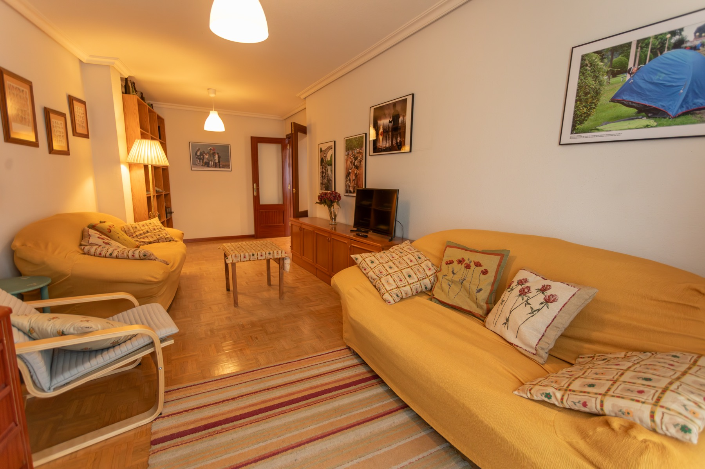

Todo el espacio
95 m² de apartamento completo para que disfrutéis a vuestro ritmo.

Cangas de Onís · Asturias
Un apartamento de 95 m², espacioso y acogedor para hasta 6 personas, a solo 5 minutos a pie del corazón de Cangas de Onís.
Una estancia sin prisas
Espacio para compartir desayunos largos, volver después de un día de aventura y descansar de verdad.
La Casa del Sella es el punto de partida perfecto para familias que quieren disfrutar de Cangas de Onís con comodidad, amplitud y todo cerca.
Conocer el apartamento →95 m² de apartamento completo para que disfrutéis a vuestro ritmo.
A cinco minutos caminando del Puente Romano y los restaurantes.
El mejor punto de partida para Covadonga y los Picos de Europa.
Tres dormitorios, cuatro camas, dos baños y Wi‑Fi gratis.
El apartamento
Opiniones de huéspedes
Booking.com · 2 opiniones
“La ubicación es genial, y el anfitrión es súper amable y atento.”
Mucho por descubrir
Sal a caminar hasta el Puente Romano, organiza una escapada a Covadonga o déjate llevar por la gastronomía local. Todo comienza a pocos minutos de tu puerta.
Planificar tu escapada →Tu escapada a Asturias